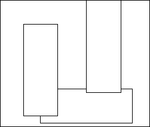

The renderer's graphics pipeline consists of multiple stages. For the purposes of this write-up, we'll look at a few of the key components of the pipeline. These are:
Transformation:
The renderer implements a full z-buffer, and this can safely be used to resolve all hidden surface issues. Solely relying on the z-buffer has the very nice property that all geometry is free to move about in an unconstrained manner. The bad part about relying only on the z-buffer is that it's not the fastest way to render things. Texturing pixels tends to take most of the time spent in the renderer, particularly for static geometry where the number of pixels/polygon is large, and the z-buffer will not prevent the same screen pixel from being textured multiple times. For example, suppose Polygon A is behind Polygon B. If you draw A first and then B, the area of overlap between A and B will be textured twice.
To look at how bad the z-buffer is requires looking at the pixel complexity of a scene. By pixel complexity, I mean the average number of polygons behind all the pixels in the window. If you have a camera inside of a cube, the pixel complexity is exactly 1.0 (i.e. there is no way that any polygon can be in front of any other polygon). Pixel complexities for modest scenes tend to be between 1.5 and 2.5. When using a z-buffer, it is possible through either dumb luck or clever engineering to render polygons in a front to back manner. This is a good thing. However, dumb luck could also produce worst case rendering (back to front), and clever engineering can also do surprising bad. The typical engineering trick is to do a z-sort of the polygons before throwing them at the z-buffer. However, this only works well when the polygon sizes are fairly uniform and objects are spaced reasonably well away from each other. If this method is used, care needs to be taken in the construction of the geometry to ensure a reasonable increase in performance. In short, the z-buffer will always display variance, and almost always will have pixels being overdrawn. Typical overdraw is roughly halfway between best and worst case, and careful region design with some programming could skew this much closer to best case.
To solve the overdraw problem, many 3D game engines use BSP (Binary Space Partitioning) trees to achieve zero pixel overdraw. The BSP tree is a geometric data structure that partitions all of space in a very structured way. Discussing how to go about building a BSP tree is beyond the scope of this document, but suffice it to say that the BSP tree can give us an ordering of geometry that is perfectly front-to-back. Once you have this, you can mark regions of the frame buffer that have already been drawn to, so that subsequent geometry is not allowed to draw in those areas. Note that this method is only effective is there actually is overdraw! There would be no performance difference between a pure z-buffer approach and a BSP tree for a camera inside of a cube.
One of the current limitations with the BSP tree "compiler" in the renderer is that it cannot handle completely arbitrary geometry. All objects must be completely separable from all other objects by 3D planes. For those of you that have seen the sub-marine room demo, it's obvious that you can do a heck of a lot even with this constraint. You just can't do everything. Interpenetrating objects are obviously a no-no, but even more subtle restrictions apply. The following diagram demonstrates three simple non-interpenetrating objects that the renderer cannot currently build a BSP tree for.

The renderer could be extended to chop up the objects as needed until they mutually become separable. This would be about a week or so of work, and would have the consequence of increasing the polygon count. This may be a good trade-off though if getting regions out quickly is more important than an extra 5% in frame rate.
One added benefit of zero-pixel overdraw is that you never have to clear the window. All the data structures needed to keep track of what part of the screen has been rendered to enables us to quickly check if any portion of the screen has not been written to. In practice this only happens if the geometry is incomplete or if there are seam lines between polygons (caused by numerical inaccuracies in 3D modelers).
One other thing about BSP trees is that they take a non-trivial amount of time to compute. Without object splitting, constructing a BSP tree takes between 1 and 60 seconds on a Pentium, depending on the complexity of the model. The cave geometry from the PCForum demo I think was around 10 seconds. Adding the capability of object splitting could possibly double the construction time.
The BSP tree allows us to only texture every pixel once for all the static scene geometry. However, it does nothing for the higher parts of the graphics pipeline, namely transformations, scan conversion and z-buffering/zero-overdraw. It would be very helpful to know that some geometry is impossible to see from some areas. For example, if I'm sitting in the Board Room, I really don't want to spend any cycles scan converting Randy's cubicle. By pre-computing the visibility for a set of geometry, we can trivially cull away large chunks of geometry very high in the graphics pipeline for any camera viewpoint.
Like BSP trees, visibility only works on static geometry. Even worse then BSP trees, computing the visibility of a set of geometry is extremely an time intensive process. Some Quake levels have been stated as taking literally hours to compute on a 4-processor Alpha. The up side is that it is a wonderful performance leveler for complicated sets of geometry. If regions were to be as complex as, say, 10101 De Anza Blvd, then pre-computed visibility would be a must. As with BSP trees, visibility only helps with certain types of geometry. If the geometry is fairly simple (like the cube room), little to nothing is gained from pre-computed visibility information.
Here's a list of some little hacks for increasing frame rate.
I ran some sample regions that Parker gave me through the renderer. Here's what I found:
The highest frame rate running in 8-bit color depth was 19 fps on a P133. The highest frame rate in 16-bit color depth was 16 fps. This was achieved by sticking the camera right up against a wall that had nothing behind it. Culling versus the viewing frustum removes most geometry, and the pixel complexity is 1.0. Rendering in 24-bit and 32-bit color is broken right now, but I'd guess that the frame rate in both these settings is at or below 10 fps. There's still room for frame rate improvement in the renderer, not a lot, but probably between 10-25%.
Turning your view to a set of real geometry, but still with zero pixel overdraw drops the frame rate by about 25% for a modest scene (this was measured looking down Parker's cavets1.obj, a long tube), independent of bit depth.
For the file glen.obj, the worst-case pixel complexity I could find was 2.1. For cavest.obj, the worst-case pixel complexity was 2.9, and for cavet.obj, worst-case pixel complexity was 3.0. I had to work a bit to find these worst case positions. It is unlikely that these positions would be encountered in a typical viewing. It is much more likely for pixel complexities to be between 1.25 and 1.75.
None of these tests were run with Java. I've heard different estimates for how much of the CPU the Java code will require (assuming everything is compiled native except for the Com). I'd put my money on 10-25%. Of course, until we measure it, we won't know for sure.
This entire document has only addressed the performance trade-offs for static geometry. All props and avatars will be thrown at the z-buffer for rendering. This obviously pushes the pixel complexity up, and the frame rate down.
Russell Pflughaupt, 5/12/97